Overview
One question, one car
Students save a lecture moment with one click and come back to it after class. A question they choose to share becomes a car in a parking lot sorted by topic. The instructor reviews the cars, answers, and the student decides when the question is settled.
The after-class parking lot
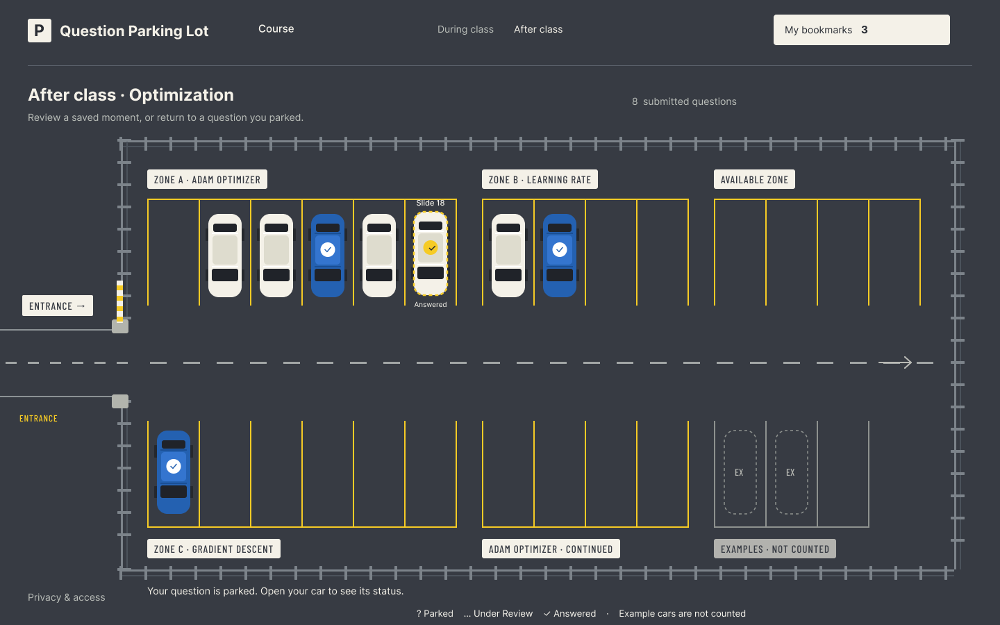
What I did
- Came up with the Question Parking Lot concept
- D1: classroom observations and student interviews
- D2: ran the brainstorming and wrote the proposal
- After D2: interviewed five education professors on my own
- D3: designed and built the whole Figma prototype, three hubs and about 40 overlays
- D3: heuristic evaluation of lecture setup, checkpoint planning, the review reminder and the bookmark drawer Mine
What the team did
- Further D1 observations and interviews
- Affinity diagram and question journey map
- Three of the four D3 inspections: two cognitive walkthroughs and the instructor-screen heuristic review
- Writing the D1–D3 reports together
Problem
Why questions go unasked
In one observed lecture, the professor asked “Any questions?” and moved to the next slide almost at once. Our research found that silence rarely meant students understood.
Three reasons students stay quiet
An expert lens on engagement
Framework offered by an educational psychologist among the five professors I interviewed after D2. Each factor maps to a D3 design decision.
Users and goals
Who it is for
Two student personas from our D1 research and the instructor who answers them. Each has a different reason the current “raise your hand” model fails.
Personas and core stories
“While listening, I want to mark an unclear slide without losing the next explanation, then return later to think and ask clearly.”
Served by one-click capture and the review window“I want to ask a question without exposing myself to public judgment or having to speak in front of classmates.”
Served by private drafts and anonymous sharing“I want to understand which ideas students are revisiting or asking about, inspect their actual questions, and respond at a useful moment without a constant live dashboard.”
Served by grouped originals and planned checkpointsFour product goals
Bookmark now, formulate later.
Draft privately and choose who may see a question.
Keep saved moments apart from questions; AI only assists.
A visible reply leads to a concrete next step.
From the D3 prototype specification. “More clicks” is not treated as “more learning”.
Expert input
What the professors said, and what I built
After D2 I interviewed five education professors about how students handle confusion. The most detailed reply came from an educational psychologist. I traced every recommendation to a screen before building the prototype.
Feedback traced to design
| What I heard | What I built | Where |
|---|---|---|
| Four engagement factors | ||
| Competence. Students may sense confusion without knowing where it is | Help-type prompts: another explanation, applying the idea, verify, not sure. An explain-or-apply check after the reply. | S6 · S10 |
| Value. Revisiting needs a reason worth the effort | A review moment built into class; replies linked to the original slide; concrete study actions. | S4 · S9 · S10 |
| Belonging. Asking can feel socially and intellectually risky | Anonymous sharing, labeled example questions, wording that treats confusion as normal. | S7 · T0 |
| Autonomy. Learners want different kinds of help | Private, anonymous or named; several next-step options; the student decides when it's resolved. | S7 · S10 |
| Specific recommendations | ||
| Students often can't form a question during the lecture | One click saves the slide and time. No typing or category during class. | S2 · S3 |
| Questions saved “for later” get forgotten | Build review into the class routine: the last two minutes, with the option to defer. | S4 · T0 |
| “Any questions?” rarely works | Planned checkpoints with a short task instead of a vague invitation. | T0 · T5 |
| Brief checks of understanding should be planned in; that interruption helps | The instructor schedules a poll, practice problem or peer discussion at a slide boundary. | T5 |
| Offer anonymity and explain what instructors can see | A visibility preview for every option; names hidden from the instructor for anonymous questions. | S7 · T3 |
| Seed the lot so nobody has to post first | One or two instructor examples, labeled and left out of the counts. | T0 · S8 |
| Sorting questions is not the same as resolving them | Each reply leads to a strategy: another example, practice, a peer, office hours. | S6 · S10 |
| Normalize confusion as information, not deficiency | “Confusion is a useful starting point for learning.” “Knowing what to work on next is progress.” | S4 · S10 |
| Students stop using a tool if nothing visibly happens | Car status changes, a published reply, and an “Address next class” option for the instructor. | S8 · T4 · S9 |
| Recall and application show more than familiarity | An optional retrieval or application prompt; reading a reply isn't treated as mastery. | S10 |
| More guidance on why a student is confused; more actionable instructor summaries; tracking unresolved questions | Not added yet. More options could make class interactions busier, so we want usability results first. | Deferred |
The expert input was written feedback, not a usability result. Each feature is my interpretation and still has to be tested.
Iteration
From a live alert to a saved moment
D2 asked students to write questions during class and warned the instructor in real time. Expert interviews pushed us to separate capture from asking.
Observations, interviews, affinity diagram, journey map
Three alternatives; combined parking lot with red/green feedback
I interviewed five education professors about the direction
Bookmark-then-ask flow in Figma, then four inspections
Think-aloud with students, walkthrough with an instructor
What changed between D2 and D3
System
How one lecture flows
The prototype has three hubs: a slide viewer during class, the parking lot after class, and an instructor parking lot. Everything else opens as an overlay so people keep their place.
Service blueprint
Six things the system keeps
A student's marker on a lecture, slide and time. Not automatically a question, and not proof of confusion.
Text the student writes from a bookmark. Kept private, or shared anonymously or by name.
A suggested grouping of shared questions. The instructor can revise it; originals are kept.
One shared question, never one bookmark. Instructor examples carry a separate “Example” marker.
A human-approved answer, example, resource, or plan to revisit next class.
The student's next step after a reply. Not an automated learning score.
Prototype map
Slide viewer
Scrolling slides 16–20 with “Bookmark this moment” on each.
S1 course home · S2 live bookmark · S3 saved toast, Undo
Student parking lot
Cars by topic zone. Review, drafting and replies open as overlays.
S4 review prompt · S5 My Bookmarks · S6 reflect · S7 who can see · S8 lot · S9 reply · S10 next step
Instructor parking lot
Lecture setup, insights and responses, all as overlays.
T0 prepare · T1 insights · T2 slide analytics · T3 AI topic review · T4 respond · T5 checkpoint
Each launcher resets the prototype state, so every evaluator starts the same task from the same point.
All 16 screens in the specification exist as a hub state or an overlay: three 1440 × 900 hubs instead of 16 separate pages, so no flow leaves its workspace.
Student experience
Save now, ask later
The only thing asked of a student during class is one click. Everything that takes thought happens after class, in an order that keeps sharing as the last and most deliberate step.
Student flow
Yellow marks the two moments the parking lot is built around: the one-click bookmark and the car. The privacy choice, outlined in yellow, comes after the question is written.
The life of a question
Answered means a reply exists. Only the student can move a question to Resolved, and reading the reply does not do it for them.
Who sees what
| Choice | Student | Instructor | Classmates | Creates a car |
|---|---|---|---|---|
| Keep private | Question, slide, time | Nothing | Nothing | No |
| Submit anonymously | Everything | Question and slide, no name | Topic totals and status | Yes |
| Show my name | Everything | Question, slide and name | Topic totals and status | Yes |
| Bookmark only | Slide and time | Opt-in counts in a time window | Nothing | No |
- Private by default. Notes and unsent drafts are visible only to the student.
- Anonymous is the suggested default when sharing, but it is still an explicit choice.
- Instructors see aggregate slide and time windows, never one student's timestamps.
- Students can opt out of aggregate bookmark counts.
- A paper fallback: write down the slide and time and add it later.
- The prototype never claims “untraceable” anonymity; a reply still has to reach the asker.
The commit button changes with the choice: “Park My Question” or “Save Privately”. These are proposed controls; production privacy protections are not built.
Reading the lot
- 1Entrance. Every shared question arrives here and parks in a zone.
- 2Topic zone. Suggested by AI, renamed or regrouped by the instructor.
- 3Your car. Dashed outline, slide tag and status. Click it to see your question.
- 4Answered cars. Blue with a check mark. Color is never the only signal.
- 5Submitted count. Only shared student questions. Private drafts are never counted.
- 6Instructor examples. Dashed and labeled “not counted”, so nobody is the first to ask.
- 7Overflow zone. “Continued” bays extend a topic. Evaluation flagged this as confusing (CW-7).
- 8Status line and legend. Below the fold on a laptop screen, the most severe finding (CW-1).
Voice and metaphor rules
S2Save it now. Think about it later.
S6Rough drafts are welcome. What part would you like help with?
S7Your question, your choice. You can ask without showing your name.
S10Knowing what to work on next is progress.
T0Help students see what a useful question can look like.
- One shared question is one car. A private draft or a bookmark never makes a car.
- Zones are content topics, never a ranking of students or question quality.
- Status uses text, icon and shape, not color alone. No red/green traffic lights.
- Instructor examples look different, say “Example”, and stay out of analytics.
- No leaderboards that equate asking more with doing worse.
Instructor experience
The instructor decides
D2 told the instructor when to stop. D3 gives them evidence and leaves the timing to them, before, during and after class.
Instructor flow with sample data
Prepare the lecture
Connect slides, add example questions, schedule the end-of-class review.
32 slides · 2 examplesPlan a checkpoint
Practice, peer discussion, a quick poll or a worked example at a slide boundary.
after Slide 18 · 2 minClass insights
Bookmarks, questions and topics kept as separate counts, never a score.
22 · 7 · 3Inspect a slide
Opt-in bookmarks and linked questions in an aggregate time window.
Slide 18 · 12 · 4 · 2:12–2:16Review originals
AI summary beside students' own wording. Edit, split or merge groups.
“Originals unchanged”Write, preview, publish
Attach a slide or worked example. A draft never notifies students.
→ status: AnsweredAll counts are fictional prototype data: 22 opted-in bookmarks, 7 submitted questions, 3 suggested topics.
Where AI sits
AI suggests
- Groups related questions into topic zones
- Writes a short summary of each group
- Offers wording to help a student clarify, only when asked
People decide
- Students keep or discard any suggested wording
- Instructors rename, split and merge groups; originals stay visible
- Instructors write, preview and publish every reply
- Students decide when a question is resolved
The prototype shows scripted AI states so the choices can be inspected. It does not run a model.
Process
From specification to clickable prototype
The specification came first. I then built it in Figma, checked the build against the spec, and fixed what broke before the team evaluated it.
16 screens, privacy rules, data objects, five test tasks
Three hubs and about 40 overlays in Figma
Checked against the spec; six issues fixed
Two walkthroughs, two heuristic evaluations
D3 prototype and early evaluation report
Five test tasks
| Task | What the participant is asked | What we look for |
|---|---|---|
| 1 · Capture | You notice a confusing step on Slide 18. Save it without missing the next explanation. | Findability, speed, attention cost, confirmation and Undo |
| 2 · Reflect & share | After class, turn the saved moment into a question and submit it without showing your name. | Context recovery, skipping AI, understanding privacy, submission |
| 3 · Instructor review | Find the most-bookmarked slides, tell bookmarks from questions, and answer one. | Reading the data, seeing originals, trust in AI grouping, publishing |
| 4 · Follow up | You got an explanation but still need practice. Choose what to do next. | Seeing the reply, a meaningful next step, avoiding a false “resolved” |
| 5 · Privacy branch | Keep an unfinished question private instead of parking it. | Whether people see that no car and no instructor-visible text is created |
Fixed before evaluation
| Problem found in review | Fix |
|---|---|
| The end-of-class review prompt never appeared | Trigger delay cut from 100 s to 0.8 s |
| Example questions duplicated real student questions | New examples about β₂ and β₁ that no student had asked |
| Topic review said “3 related questions” above four | Label changed to “original student wording below” |
| The lot still said “parked” after an answer | Publishing now sets “Your instructor responded…” |
| “Edit my question” still showed after an answer | Editing is turned off once a question is answered |
| Privacy options were hard to read | Standard radio buttons tied to the sharing choice |
Readiness check against the spec
- MetAll 16 specified screens exist as a hub state or overlay
- MetCapture → review → privacy → park is clickable
- MetAnalytics → original question → publish is clickable
- MetReply → learning follow-up, with resolved, practice and still-confused paths
- MetPrivate, anonymous and named paths look and behave differently
- MetBookmarks, questions, topics and examples have separate counts
- MetAI grouping is editable and never overwrites student wording
- MetEvery expert suggestion maps to a screen
- MetOne scenario throughout, with synthetic data labeled
- PartlyMobile frames for students: the spec suggested 390 × 844; we used desktop frames for both sides
- PartlyReply notification: shown as a lot message and a “Replies (1)” button, not a separate card
Evaluation
Four inspections, seventeen findings
We ran two cognitive walkthroughs and two heuristic evaluations, then clicked through the build to check what the screenshots could not show. Two predicted problems turned out to be handled already.
Methods and coverage
Wharton et al. (1994), clicked through in presentation mode. Share anonymously; keep a question private.
CWR-01, CWR-02Spencer (2000), on design frames. Bookmark and recover, ask, check understanding, instructor publish.
SC-1 to SC-4Nielsen's 10 heuristics on insights, slide analytics, review and publishing (T1–T4).
HE-01 to HE-07Nielsen's 10 heuristics on lecture setup, checkpoint planning, the review reminder and My Bookmarks (T0, T5, S4–S5).
HE-08 to HE-12Findings by severity
Nielsen's 0–4 severity scale. No finding blocked a task. Rows marked with a yellow edge come from my evaluation.
Four patterns
The privacy screen is clear at the moment of choice. Once a student or instructor acts, the receipt is off-screen or silent about the audience.
Students find their questions only as cars on a map. Instructors reach questions through charts that don't look clickable.
“Continue”, “Skip AI”, “Help me clarify” and “Edit my question” compete, and the same state carries different names.
Instructors can't confirm a checkpoint is scheduled; students aren't told where a deferred review waits.
What held up
One-click capture
Bookmarking never pulled attention from the slide. The build confirms in place: “✓ Moment saved · Slide 18 · 2:14 PM”.
The privacy screen
Each option describes what the instructor and classmates will see, and the button relabels to match.
Answered ≠ resolved
Reading a reply doesn't close a question. Practice is labeled as unscored.
AI under review
Editing a group shows “Category edited · Originals unchanged”. Nothing publishes without a preview.
Honest counts
Bookmarks are “not a comprehension score”; instructor examples are excluded from totals (HE-12).
A sized-up review
The reminder shows “3 saved · about 2 minutes”, so students can decide whether to review now (HE-10).
Next
Fix the labels, test the concept
Feedback and wording problems are cheap to fix and need no user data. The metaphor, the role of AI and the anonymous default need real students before we change them.
Plan for the next round
Fix before testing
Show the result, name the audience
- Receipts in view: “Parked anonymously. Your instructor sees your question and slide, not your name.”
- A “My questions” list beside the map and a pinned legend
- One AI choice: “Continue without AI” or “Help me clarify”
- One vocabulary for private drafts and help types
- Recipient count on the instructor's preview and receipt
- Checkpoint status in lecture setup; “Review pending in My Bookmarks”
Test with people first
Think-aloud and an instructor walkthrough
- 4–5 graduate students from large lecture courses, Tasks 1, 2 and 5
- Does “park” read as “send to the instructor”?
- A TA or instructor runs review and respond (Tasks 3, 4)
- Check the lot on smaller laptop screens
After each task: “Right now, who can see your question?”
Keep as is
What the evaluation supports
- One-click bookmarking during class
- The privacy screen and its relabeling button
- Private drafts, instructor preview, answered vs. resolved
- The parking-lot visualization, with clearer labels
Assumptions to test, and what we won't build
- One-click bookmarking disrupts less than typing a question live
- Students revisit bookmarks when review is part of the course routine
- The privacy choices are understandable for different social and language needs
- Optional AI prompts help without taking ownership of the question
- The parking metaphor makes follow-up visible rather than decorating a queue
- Instructors can tell bookmarks from questions without extra monitoring burden
- A reply plus a next-step choice helps more than a notification alone
- No live red/green understanding vote or automatic alert
- No inference of who is disengaged, confused or “at risk”
- No AI-generated answer published as the instructor's reply
- No real Canvas, slide or AI integration at this fidelity
- No claims of learning gains or guaranteed anonymity before testing
Prototype
Key screens
Low-fidelity Figma frames, 1440 px wide, with sample data from a Week 8 machine-learning lecture on optimization.
Student
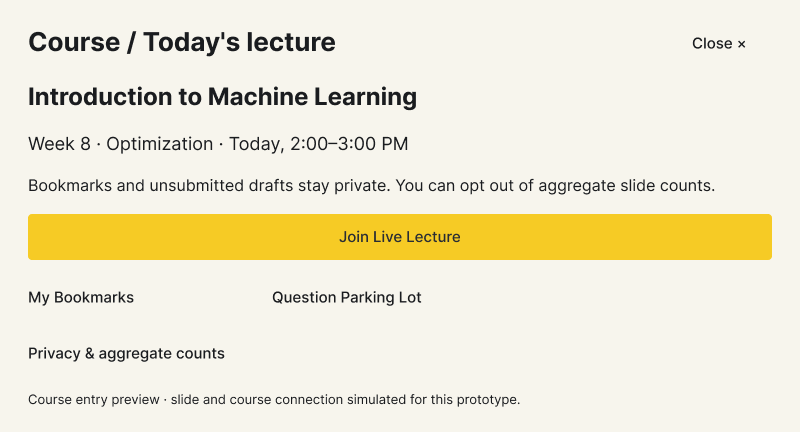
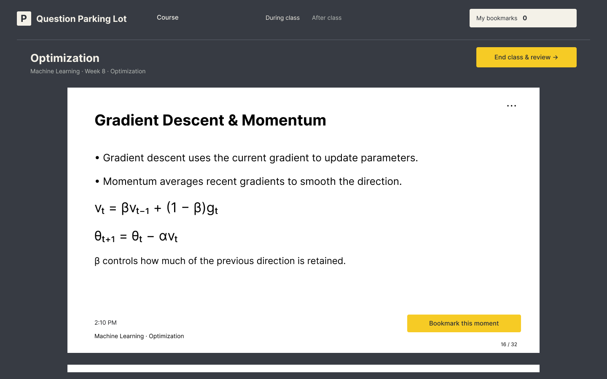
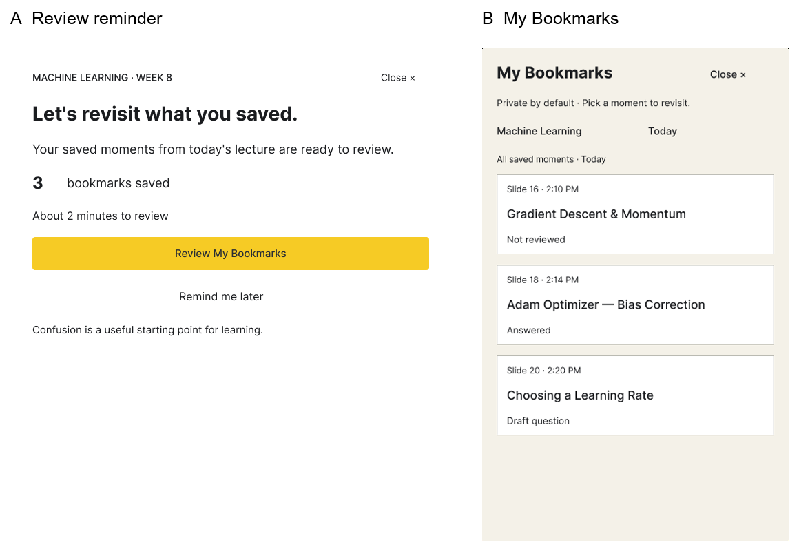
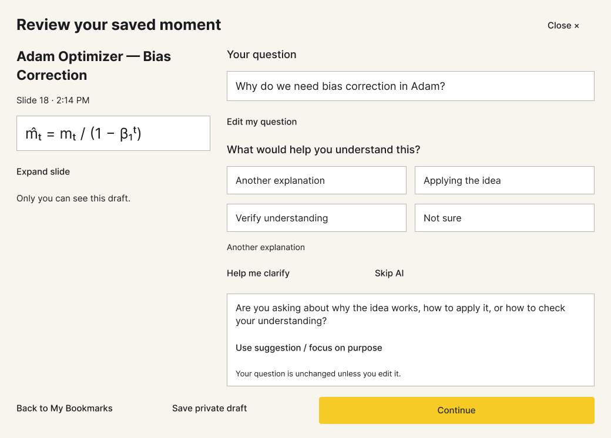
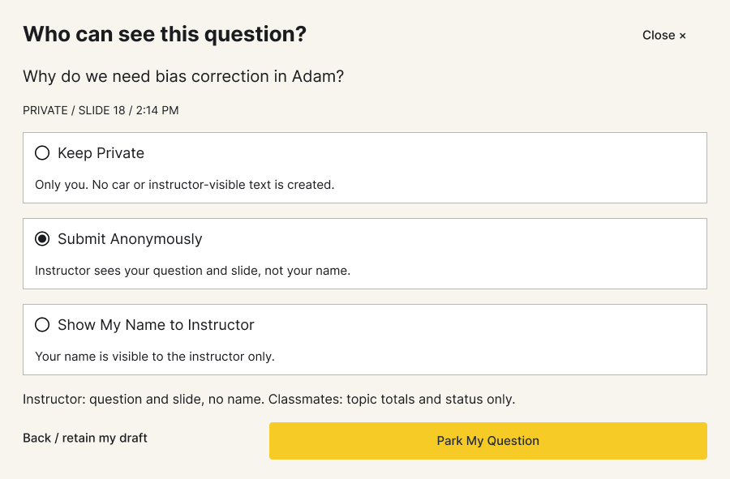
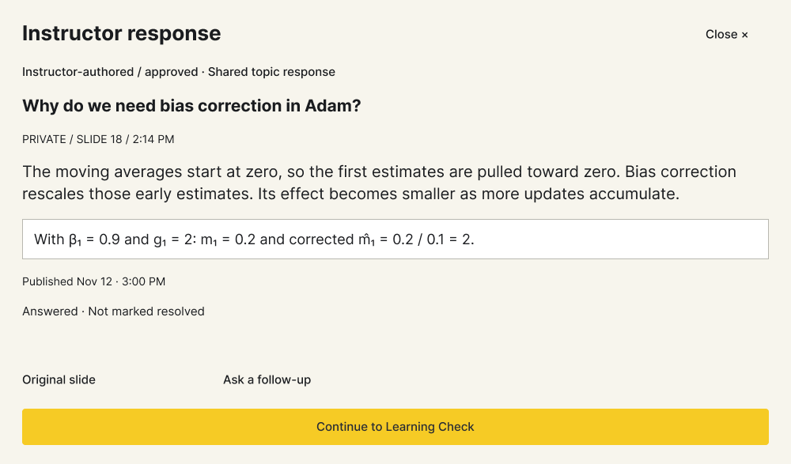
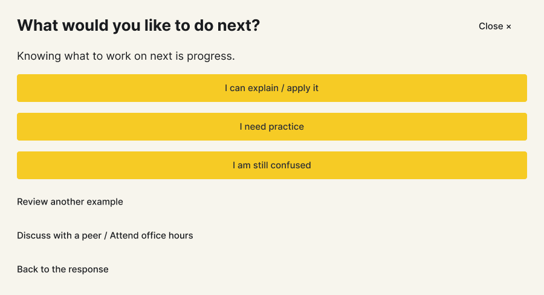
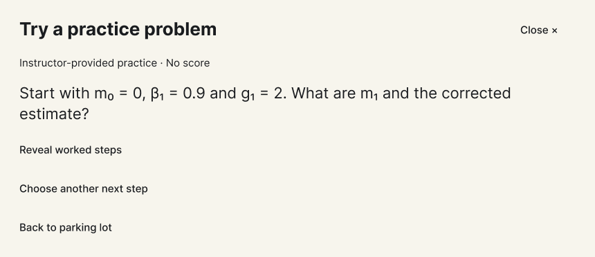
Instructor
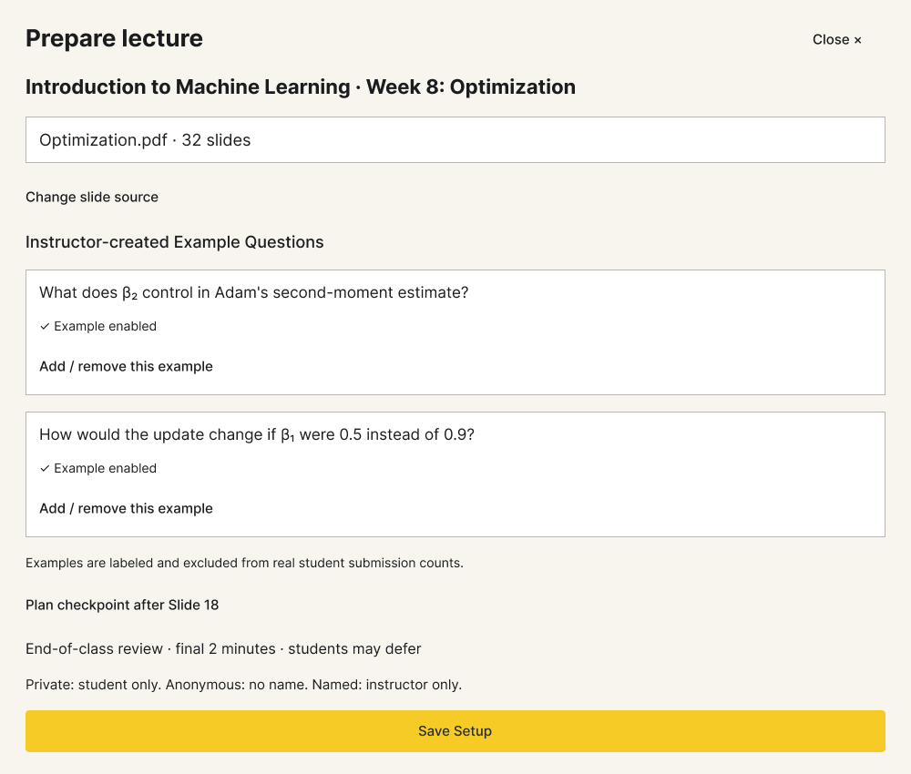
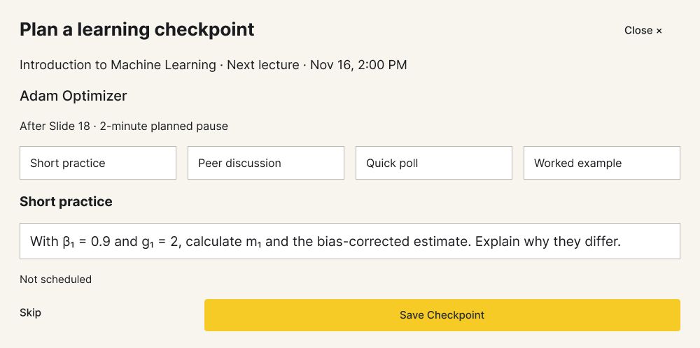
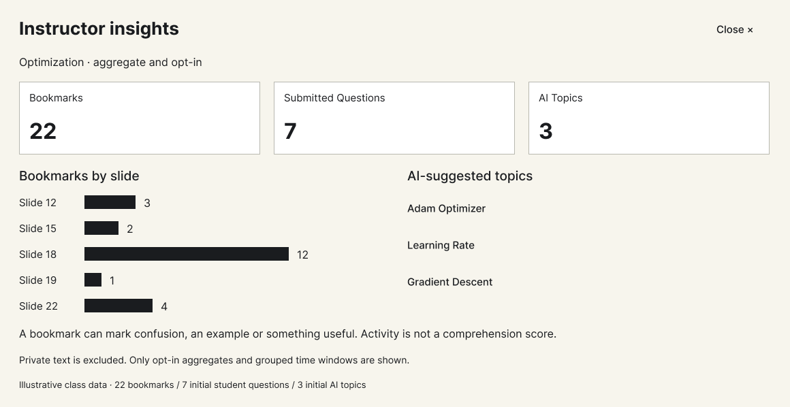
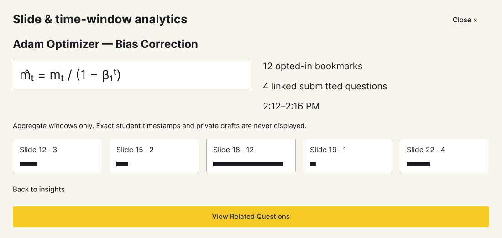
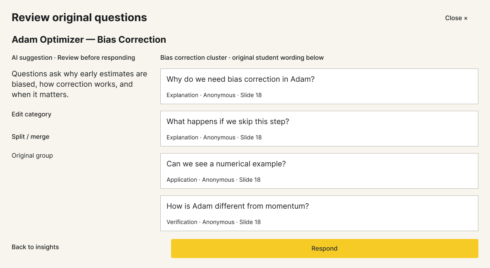
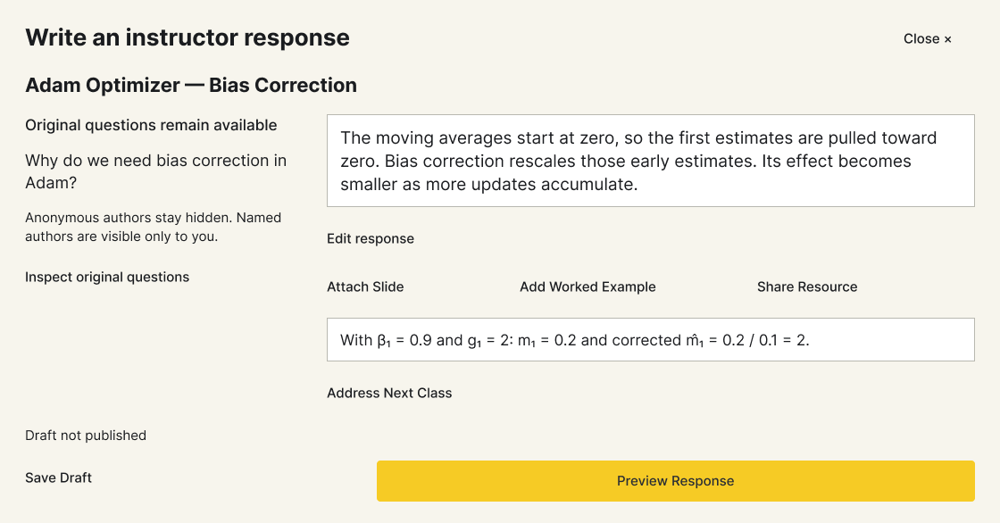
Team Google Scholars, CS 6750 Human-Computer Interaction, Georgia Tech, Fall 2026. Diagrams drawn from the D1–D3 reports, the D3 prototype specification and overview, and the team's Figma file.
The prototype uses sample data and scripted interactions. It is not a working classroom system, and no usability outcomes with real students have been measured yet.